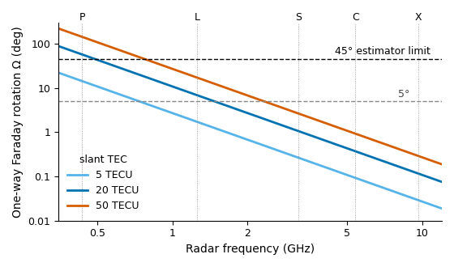

| SAR Concepts: Polarimetric Calibration and Propagation Effects | |
The scattering matrix a radar records is not the one the target produced. Antenna cross-talk, unequal channel gains, ionospheric Faraday rotation and thermal noise all move power between the surface, double-bounce and volume terms of a decomposition. Know which of them your data still contain before you interpret a polarimetric result.
For one pixel, the measured matrix M is related to the true scattering matrix S by
M = A ejφ · R · F(Ω) · S · F(Ω) · T + N
R = [ 1 δ1 ; δ2 fr ], T = [ 1 δ3 ; δ4 ft ], F(Ω) = [ cos Ω sin Ω ; −sin Ω cos Ω ]
R acts on the received wave and T on the transmitted wave. A and φ are the absolute gain and phase, δ1...δ4 the cross-talk terms (leakage between H and V), fr and ft the complex channel imbalances, F(Ω) the one-way Faraday rotation (applied on the way down and on the way up), and N additive noise. Without cross-talk and rotation, MVV = frft SVV: frft is the co-polar imbalance, and the two cross-polar channels differ by the factor fr/ft.
A co-polar amplitude error moves power between the Pauli blue (T11) and red (T22) channels; a phase error shifts the HH−VV phase that separates odd bounce (near 0) from double bounce (near π). Cross-talk leaks co-polar signal into HV and VH: for a target with HV 15 dB below HH, −25 dB of cross-talk raises HV by 0.4–1.2 dB and −30 dB by 0.1–0.4 dB, depending on the cross-talk phases. That extra power appears as "volume" and entropy in decompositions.
Distributed targets. Quegan (1994) estimates cross-talk and the cross-polar imbalance from the 4×4 covariance of the scene, assuming reciprocity (SHV = SVH) and reflection symmetry (co- and cross-polar channels uncorrelated). Ainsworth et al. (2006) use reciprocity alone and iterate, which preserves the orientation-angle signal of sloped terrain. Neither can find the co-polar imbalance frft: that needs a target with a known HH/VV ratio and phase. At L- and P-band, part of any Faraday rotation is absorbed into distributed-target cross-talk estimates.
Point targets. A trihedral corner reflector has SHH = SVV and no cross-polar return. It fixes the co-polar imbalance and, from its known radar cross-section, the absolute gain (van Zyl 1990; Freeman 1992). Rotated dihedrals and polarimetric active radar calibrators (PARCs) give strong known cross-polar responses.
In the Earth's magnetic field the ionosphere rotates the plane of polarisation by a one-way angle
Ω = K · BL · TECs / f2, K = e3 / (8π2 ε0 me2 c) ≈ 2.365×104 A m2 kg−1
Here Ω is in radians, BL is the geomagnetic field component along the propagation path (T), TECs the slant total electron content (electrons/m2; 1 TECU = 1016 m−2) and f the radar frequency (Hz). Since f = c/λ, Ω grows with λ2. BL depends on latitude and look direction; TEC on time of day, season and the solar cycle.

Figure 1. One-way Faraday rotation against frequency for BL = 40 µT. The dashed lines mark 5°, above which Wright et al. (2003) expect geophysical retrievals such as forest biomass to be degraded, and 45°, beyond which the estimator in SNAP becomes ambiguous.
| Band, frequency | Missions | 5 TECU | 20 TECU | 50 TECU |
|---|---|---|---|---|
| P, 435 MHz | BIOMASS | 14° | 57° | 143° |
| L, 1.26 GHz | ALOS-2, NISAR | 1.7° | 6.9° | 17° |
| S, 3.2 GHz | NISAR | 0.26° | 1.1° | 2.7° |
| C, 5.405 GHz | Sentinel-1, RADARSAT-2 | 0.09° | 0.37° | 0.93° |
| X, 9.65 GHz | TerraSAR-X | 0.03° | 0.12° | 0.29° |
Faraday rotation breaks SHV = SVH and mixes co-polar signal into the cross-polar channels: 5° raises HV by about 2 dB for a target with HV 15 dB below HH.
Estimation. Bickel and Bates (1965) showed that the rotation appears as a phase between the two circular cross-polar terms. In SNAP's convention (the F(Ω) above):
Z12 = MHV − MVH + j(MHH + MVV), Z21 = MVH − MHV + j(MHH + MVV)
Ω = −¼ arg < Z12 Z21* >
The estimate is unambiguous only for |Ω| < 45°, and residual cross-talk, imbalance and noise bias it (Freeman 2004 shows that the best of three estimators reaches about ±3–5° for reasonable residuals). R and T sit outside F(Ω), so system distortions are removed first. Some processors already remove Faraday rotation; check the product annotation.
The cross-polar channels are often only a few dB above the noise floor (NESZ; see Radiometry), so noise makes dark areas look like volume. HV and VH carry the same signal P but independent noise N, so their coherence is γ = P / (P + N) and the noise-free power is γ·<|MHV|2>. Averaging HV and VH, as SNAP does when it forms T3 or C3, improves the cross-polar signal-to-noise ratio by 3 dB.
A surface tilted in azimuth rotates the scattering matrix about the line of sight by an angle θ. Without a range slope, tan θ = tan ω / sin φ, where ω is the azimuth slope and φ the look angle (Lee et al. 2000): a 10° slope seen at 35° gives θ ≈ 17°. Buildings not parallel to the track do the same, moving power from T22 into T33 (apparent volume). The correction rotates T3 back by the angle that sets Re(T23) to zero; roll-invariant quantities such as entropy and α do not change.
Polarimetric-Calibration) accepts only a quad-pol
scattering-matrix product (8 i/q bands). It estimates the four cross-talk terms with a 2×2 solve
in the form of Quegan (1994), which assumes reflection symmetry. method sets only the
number of passes (Quegan 1; Ainsworth numIterations, default 4); the passes converge, but
the full Ainsworth et al. fit is not implemented. Its model has one co-polar imbalance f
(fr = ft = f, so VV is scaled by f2). By default only the cross-talk
is estimated and the co-polar imbalance is left untouched (f = 1), so the scene's HH/VV ratio is kept,
as the distributed-target methods above require. The option
estimateCoPolImbalance estimates f from the scene by assuming equal HH and VV power and
zero HH–VV phase; this forces VV/HH to 0 dB, and the phase of f is ambiguous by π. Use
it only when that assumption holds; for a true co-polar imbalance, use a trihedral corner reflector.
No cross-polar imbalance is estimated. The estimates are stored in the metadata element
Polarimetric_Calibration (channelImbalance is the one-way f that was
applied, 1 + 0j by default); its delta1...delta4 are numbered differently from the
δ1...δ4 above. The operator is experimental: check its output
against corner reflectors or a reference processor before using it.Faraday-Rotation-Correction) accepts only the quad-pol
scattering matrix. It estimates Ω as above over a sliding window (windowSize 10, i.e.
11×11 pixels) and applies F(−Ω) on both sides of M. The angle is not written out.Cross-Channel-SNR-Correction) accepts only the quad-pol
scattering matrix. It computes γ between HV and VH in a 5×5 window (windowSize 5)
and multiplies HV and VH by √γ; HH and VV pass unchanged. This scales the power by
γ, so under the model above the corrected power equals the signal power P. Anything else that
lowers γ (residual cross-talk, Faraday rotation) is removed as if it were noise. The algorithm
is specific to SNAP.Orientation-Angle-Correction) accepts the
scattering matrix or a C3, C4, T3 or T4 product, writes T3, and estimates θ pixel by pixel, so
speckle-filter first. Parameters and the GPT-only decomposition option are on the
operator page.outputImageInComplex);See also Polarimetry Primer, Polarimetric Decompositions and Atmospheric and Ionospheric Phase.